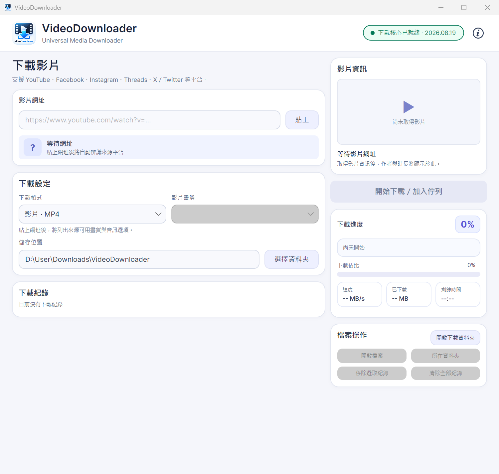

↗
貼上連結即可開始
支援 YouTube、Facebook、Instagram、Threads 與 X / Twitter 等常見平台。
VideoDownloader 是專為 Windows 打造的桌面影音下載工具。貼上連結、選擇格式與品質，便能將影片或音訊儲存到你的電腦。

支援平台
 Instagram
Threads
X / Twitter
Instagram
Threads
X / Twitter
自動取得影音資訊與可用格式，讓你用最少操作完成下載。
支援 YouTube、Facebook、Instagram、Threads 與 X / Twitter 等常見平台。
依來源提供的格式選擇 MP4、MKV 或 4K、1080p、720p 等畫質。
支援 MP3 與 WAV，並可選擇適合需求的音訊品質。
顯示下載百分比、傳輸速度、剩餘時間與處理狀態。
一次加入多個任務，依序處理並保留下載歷史紀錄。
首次啟動時自動準備 yt-dlp 與 FFmpeg，減少額外設定。
下載安裝程式後，依照精靈完成安裝，即可從開始功能表或桌面捷徑開啟 VideoDownloader。
下載 VideoDownloader v1.0.0版本：1.0.0
VideoDownloader 正式版，適用於 Windows 10 / 11 x64。
Windows 10 / 11 · x64 · 需要網路連線
約 230 MB 可用空間
下載前想了解更多？先看看幾個常見問題。
影片可能受到平台地區限制、年齡限制、來源下架或平台規則影響。請確認網址可在瀏覽器正常開啟，並稍後再試。
目前主要支援公開可存取的內容。私人影片或需要登入、Cookie 驗證的內容可能無法取得。
程式第一次啟動會自動準備 yt-dlp 與 FFmpeg，並檢查下載核心版本，因此需要一些時間與網路連線。
請確認網路連線正常後按「重試」。若仍然失敗，請到 GitHub Issues 回報錯誤訊息與系統版本。
100% 代表串流下載完成，程式可能還在進行影片合併、轉檔或音訊處理，完成後才會顯示最終狀態。
目前安裝程式尚未加入 Windows 程式碼簽章，因此 SmartScreen 可能顯示未知發行者。請確認安裝檔來自本網站或官方 GitHub Releases。
MP3 位元率越高檔案越大，但不會超過來源本身的音質。一般使用可選 192 或 256 kbps；想保留最佳可用品質時選擇「最佳音質」即可。
畫質選項會依影片來源實際提供的格式產生。來源只有 720p 時不會顯示 1080p 或 4K，避免選到不存在的串流。
可以。影片可選 MP4 或 MKV，再依來源選擇可用畫質；純音訊則可選 MP3 或 WAV 與對應的音訊品質。